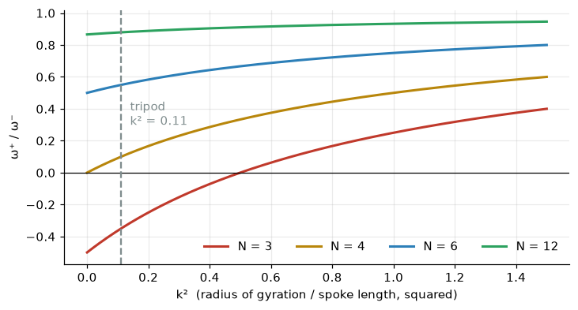
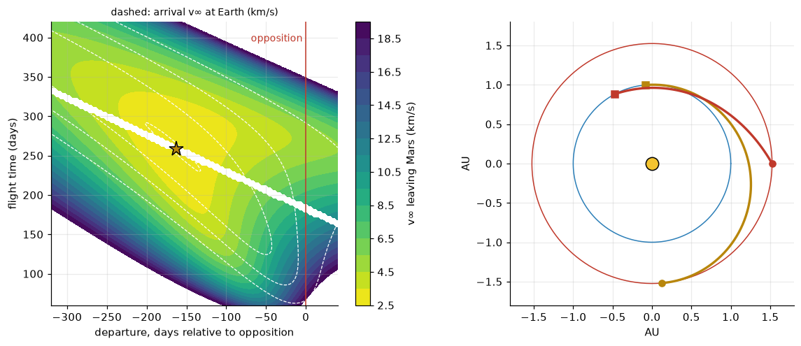
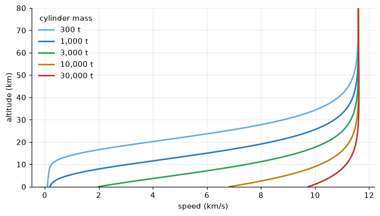

The Martian Tripod: Walking a Fighting-Machine in MuJoCo
The kinematics of Wells’s tripods, the physics engine behind modern robot learning, and the road from Mars
A MuJoCo model of an H. G. Wells fighting-machine: leg kinematics, why a tripod cannot roll, a model-predictive tumbling gait, an overview of MuJoCo and DeepMind, and the maths of firing the cylinders from Mars.
sci-fi
robotics
physics
orbital mechanics
python
Author
Paul Milne
Published
October 24, 2026
“A monstrous tripod, higher than many houses, striding over the young pine trees, and smashing them aside in its career; a walking engine of glittering metal … Can you imagine a milking stool tilted and bowled violently along the ground?”
H. G. Wells, The War of the Worlds (1898), Book I, chapter X
Wells gives us a three-legged walking machine and almost nothing about how it walks. This post takes him at his word and builds one. The machine is a 257-tonne, 30-metre tripod simulated in MuJoCo, the physics engine that now underpins a large part of robot-learning research. It walks into a Surrey village, rears up to look round, and burns what it finds with a Heat-Ray.
On the way the post covers:
what MuJoCo is, and why Google DeepMind bought it and gave it away;
the leg kinematics, statics and stability of a three-legged machine, worked through with the model;
why Wells’s “bowled milking stool” cannot simply roll, and the planned-fall gait that works instead;
the other end of the story: how the cylinders would have to be fired from Mars, the transfer orbit to Earth, and what arriving at 12 km/s would do to the Martians inside.
The video below is the simulation itself, seen from eye height in the village, with a soundtrack synthesised from the simulated motors, footfalls and fires.
About the model and the sources
The simulation code lives in the martian-tripod project alongside this blog. Every number in this post’s code outputs comes from running it, or from the orbital calculations below. Wells gives few engineering details, so the machine’s dimensions and masses are choices, not quotations. The history of MuJoCo is written from memory of the published record, so check specific dates before quoting them.
Where the Martians came down
Seven of the ten cylinders land in the novel, all within about 25 miles of London. The interactive atlas below follows them from the sand pits on Horsell Common to the great pit on Primrose Hill. It also traces the Martian advance, the narrator’s route through Surrey and London, and his brother’s flight to the Essex coast. Use the day buttons or Play to watch the invasion unfold, and click any marker for the passage it comes from.
MuJoCo (Multi-Joint dynamics with Contact) was written by Emanuel Todorov, with Tom Erez and Yuval Tassa, at the University of Washington. It was introduced in the 2012 paper “MuJoCo: A physics engine for model-based control”. As the title says, it was built for control: for computing what an articulated body will do, quickly and accurately, so that an optimiser could plan its movements.
How it works
Game physics engines usually simulate each rigid body separately and hold them together with joint constraints. MuJoCo instead works in generalised coordinates, the joint angles themselves, and writes the dynamics of the whole mechanism as
where \(q\) and \(v\) are joint positions and velocities, \(M\) is the mass matrix, \(c\) collects gravity, Coriolis and centrifugal terms, \(\tau\) the motor torques, and \(f\) the contact and constraint forces acting through their Jacobian \(J\).
The distinctive part is contact. MuJoCo treats contacts as soft constraints and finds the contact forces by solving a small convex optimisation at each step, a modern form of Gauss’s principle of least constraint. The method is fast, stable at large timesteps, and well-defined in both directions. Given a motion, it can recover the forces that produced it, and that inverse dynamics is what model-based controllers need.
Models are written in an XML format, MJCF. The tripod’s model file is generated from a single Python parameter file, so changing a leg length changes everything consistently.
From research tool to AI infrastructure
MuJoCo’s speed made it the default simulator for a new kind of AI.
Deep reinforcement learning (2015 onward). Learning to control a body by trial and error needs millions of simulated episodes. The continuous-control benchmarks that became standard (HalfCheetah, Hopper, Walker, Ant, Humanoid in OpenAI Gym, and later the DeepMind Control Suite) were all MuJoCo models. Algorithms such as TRPO, PPO, DDPG and SAC were developed and compared on them.
Sim-to-real robotics. OpenAI’s Dactyl hand learned to manipulate a cube in simulation before doing it on a real robot hand. DeepMind trained small humanoid robots to play football in MuJoCo and transferred the policies to hardware.
DeepMind’s acquisition (2021). DeepMind, where Tassa and others now worked, bought MuJoCo in October 2021 and made it free. In 2022 it was released as open source under the Apache 2.0 licence. That removed the licence cost that had kept it out of many labs and classrooms.
Scaling up. MuJoCo 3 added MJX, a re-implementation in JAX that runs thousands of simulations in parallel on GPUs and TPUs. The point is the same as with large language models: learning is limited by how much experience you can generate. Later work extended this further, including a GPU version built with NVIDIA (MuJoCo Warp).
In short, MuJoCo is to robot learning roughly what large text datasets are to language models: the source of experience. The control methods in this post are classical rather than learned, but they lean on the same features. These are an exact, fast forward model, cheap inverse dynamics and Jacobians, ray casting (used for the Heat-Ray) and easy access to every internal quantity.
Figure 1: The MuJoCo model. Left: standing in the village, from the witness camera. Right: mid-stride, about 12 s into a walk, from a camera that follows the machine.
The model follows Wells where he is specific and makes engineering choices where he is not.
Part
Model
Wells
Hood
160 t brass ellipsoid, 9 m across, carried 30 m up
“a brazen hood”, “higher than many houses”
Legs
three, each with hip yaw, hip pitch and knee; 16 m thigh, 28 m shin
“articulate ropes of steel dangling”
Motors
torque-controlled, limited to 40 MN·m per joint
not described
Tentacles
two chains of passive spring-damper links
“long, flexible, glittering tentacles”
Heat-Ray
projector on a two-axis arm; a ray cast through the scene
“an invisible, inevitable sword of heat”
Carrier
9 t basket on the back of the hood
“the great metallic carrier which projected behind him”
Leg kinematics
Each leg hangs from the underside of the hood at azimuth \(a_i \in \{0^\circ, 120^\circ, 240^\circ\}\), on a circle of radius \(r_h = 2.6\) m, \(d_h = 2\) m below the hood’s centre. It has three joints: a yaw \(\psi\) that swings the leg’s plane round, then a hip pitch \(q_h\) and knee \(q_k\) that work in that plane like a two-link arm.
Within the leg plane, measure the thigh and shin by their elevation angles \(\phi_1 = -q_h\) and \(\phi_2 = -(q_h + q_k)\). The foot, relative to the hip, is at
where \(\mathbf{m}_i = (r_h\cos a_i,\ r_h\sin a_i,\ -d_h)\) is the hip mount.
Inverse kinematics
Going the other way, to find joint angles that put the foot at a given point, is what every gait needs. Transform the target into the hip’s frame to get \((x, y, z)\). Then the yaw is \(\psi = \operatorname{atan2}(y, x)\), which leaves a planar problem with horizontal reach \(\rho = \sqrt{x^2 + y^2}\) and height \(z\). The law of cosines gives the knee bend:
with \(\phi_2 = \phi_1 + \beta\). There are two solutions, \(\pm\beta\). The model takes the knee-up one, with knees above the line from hip to foot. That is how a spider or a harvestman stands, and it is the silhouette everyone draws for Wells’s machines. A solution exists only if the foot lies in the annulus \(|L_1 - L_2| \le \sqrt{\rho^2 + z^2} \le L_1 + L_2\), between 12 m and 44 m from the hip.
Figure 2: One leg in its own plane. The shaded annulus is everywhere the foot can reach. The solid leg is the walking stance; the dashed leg is the machine reared up to look round, with the hood raised 7 m and the legs near the edge of their reach.
stance joint angles: hip pitch -3.2 deg, knee 86.2 deg
In the walking stance the thigh is almost level and the shin drops nearly vertically, like a harvestman’s leg. Rearing up to look round takes the foot to about 90% of full reach. That is why the machine has to stop to do it: from there it cannot take a full stride.
Statics: what the motors must hold
A leg pushing on the ground with force \(\mathbf{f}\) at the foot needs joint torques
\[
\boldsymbol\tau = J^\top(q)\,\mathbf{f},
\]
where \(J\) is the foot’s Jacobian, the matrix that maps joint velocities to foot velocity. This is the principle of virtual work: power in at the joints equals power out at the foot, \(\boldsymbol\tau\cdot\dot{\mathbf q} = \mathbf f\cdot\dot{\mathbf p}\). For a vertical foot force \(F_z\), the hip-pitch torque is just \(F_z\) times the foot’s horizontal distance from the hip, less the moment of the leg’s own weight:
Here is that estimate against what MuJoCo’s balance controller actually commands while the machine stands still.
Show code
d = fresh()ctl = BodyController(P, model)goal, _ = ctl.com_state(d)while d.time <6.0: ctl(d, [0, 1, 2], goal, np.zeros(3), rotz(0.0)); mujoco.mj_step(model, d)# hand calculation for leg 1, from the stance geometryqh, qk = leg_ik(P)p1, p2 =-qh, -(qh + qk)x_knee = L1*math.cos(p1); x_foot = x_knee + L2*math.cos(p2)leg = P.legweight_moment =9.81*(leg.thigh_mass*x_knee/2+ leg.knee_mass*x_knee+ leg.shin_mass*(x_knee + x_foot)/2+ leg.foot_mass*x_foot)Fz = ctl.last_forces[1][2]tau_hip_hand = Fz*x_foot - weight_momenttau_knee_hand = Fz*(x_foot - x_knee) -9.81*(leg.shin_mass*(x_foot - x_knee)/2+ leg.foot_mass*(x_foot - x_knee))tau_sim = d.ctrl[3:6]print(f"foot load (leg 1) {Fz/1e6:6.2f} MN (weight / 3 = {MASS*9.81/3/1e6:.2f} MN)")print(f"foot reach from hip {x_foot:6.1f} m, knee {x_knee:.1f} m out")print(f"hip torque hand {tau_hip_hand/1e6:6.2f} MN m, MuJoCo {abs(tau_sim[1])/1e6:6.2f} MN m")print(f"knee torque hand {tau_knee_hand/1e6:6.2f} MN m, MuJoCo {abs(tau_sim[2])/1e6:6.2f} MN m")print(f"motor limit {P.max_torque/1e6:.0f} MN m = {P.max_torque/abs(tau_sim[1]):.1f} x the standing hip torque")
foot load (leg 1) 0.85 MN (weight / 3 = 0.84 MN)
foot reach from hip 19.4 m, knee 16.0 m out
hip torque hand 13.20 MN m, MuJoCo 13.20 MN m
knee torque hand 2.68 MN m, MuJoCo 2.68 MN m
motor limit 40 MN m = 3.0 x the standing hip torque
The hand calculation and the simulation agree. The hip carries most of the load because the foot is almost 20 m out from it. The knee, sitting nearly above the foot, carries much less. That is the advantage of the spider stance: the shin stands almost vertical, so the knee works little, and the hip motor does most of the work.
Can a tripod roll? The milking-stool problem
Wells’s image, a milking stool “tilted and bowled violently along the ground”, suggests the machine rolls over its legs like a wheel without a rim. That is a classic model in walking research, the rimless wheel (McGeer, 1990): \(N\) rigid spokes of length \(L\) around a hub of mass \(M\) and radius of gyration \(kL\).
Between footfalls the wheel pivots over the stance spoke. When the next spoke strikes the ground, the collision is instantaneous, so angular momentum about the new contact point is conserved. Two spokes are \(2\alpha = 2\pi/N\) apart, which gives
For a three-spoke wheel, \(\cos 2\alpha = \cos 120^\circ = -\tfrac12\). Unless \(k^2 > \tfrac12\), the ratio is negative, which would need the trailing foot to pull on the ground. It can’t, so the footfall stops the roll dead. The milking stool only bowls along if most of its inertia is out in its legs. The tripod’s isn’t, as MuJoCo’s mass properties show.
Show code
d = fresh()com = d.subtree_com[HOOD].copy()I = np.zeros((3, 3)); M =0.0for b inrange(model.nbody):if model.body_rootid[b] != HOOD:continue mb = model.body_mass[b]; R = d.ximat[b].reshape(3, 3) rvec = d.xipos[b] - com I += R @ np.diag(model.body_inertia[b]) @ R.T + mb*(rvec @ rvec*np.eye(3) - np.outer(rvec, rvec)) M += mbfoot = d.site_xpos[model.site("foot1").id].copy(); foot[2] -= P.leg.foot_radiusL_spoke = math.hypot(foot[0] - com[0], com[2] - foot[2]) # in the plane of the roll over the 1-2 edgek2 = I[1, 1]/(M*L_spoke**2)k2s = np.linspace(0, 1.5, 300)fig, ax = plt.subplots(figsize=(7.5, 3.8))for n, col in [(3, RED), (4, BRASS), (6, BLUE), (12, GREEN)]: ax.plot(k2s, (k2s + math.cos(2*math.pi/n))/(1+ k2s), color=col, lw=2, label=f"N = {n}")ax.axhline(0, color="k", lw=0.8); ax.axvline(k2, color=GREY, ls="--")ax.text(k2 +0.03, 0.3, f"tripod\nk² = {k2:.2f}", color=GREY)ax.set_xlabel("k² (radius of gyration / spoke length, squared)"); ax.set_ylabel("ω⁺ / ω⁻")ax.legend(frameon=False, ncol=4, loc="lower right"); plt.show()print(f"spoke length {L_spoke:.1f} m, k^2 = {k2:.3f}, three-spoke footfall ratio = {(k2 -0.5)/(1+ k2):.2f}")

Figure 3: Fraction of angular velocity that survives a footfall for an N-spoked rimless wheel, against how far out the mass is (k²). Below zero, the wheel stops dead. The vertical line is the tripod with its legs locked, computed from the MuJoCo model.
spoke length 29.3 m, k^2 = 0.110, three-spoke footfall ratio = -0.35
So the legs must carry the body over every step. The project’s rimless_wheel.py checks the impact law against MuJoCo contact simulations: the six-spoke wheel’s steady rolling speed down a 15° slope matches theory to about 1%, and a three-spoke wheel stops at the first footfall.
Balance: the support triangle and the hinge
A body standing on point feet is statically balanced when its centre of mass lies above the support polygon, the convex hull of the feet. For a tripod that is a triangle. With all three feet down the machine is stable, but it cannot step: lifting any foot shrinks the support polygon to the line between the other two.
On two feet the machine is a hinge. Nothing the motors do can produce a moment about the line through two point feet, so across that line the body simply falls. Treat it as an inverted pendulum with the centre of mass at height \(h\). If \(y\) is the horizontal distance of the centre of mass from the hinge line,
\[
\ddot y = \frac{g}{h}\,y \quad\Longrightarrow\quad y(t) = y_0\cosh\omega t + \frac{\dot y_0}{\omega}\sinh\omega t, \qquad \omega = \sqrt{g/h}.
\]
Show code
h_com =26.5w = math.sqrt(9.81/h_com)print(f"omega = {w:.3f} 1/s, so the fall e-folds every {1/w:.2f} s")print(f"over a 1.2 s swing a lean of 1 m grows to {math.cosh(w*1.2):.2f} m (starting at rest)")
omega = 0.608 1/s, so the fall e-folds every 1.64 s
over a 1.2 s swing a lean of 1 m grows to 1.28 m (starting at rest)
The fall is slow because the machine is tall, but it cannot be stopped from two feet. The swinging leg must land in time to catch it. The tumble is therefore part of the gait itself: Wells’s bowled milking stool, in three dimensions.
Walking by planning the fall
The project’s first gait waited out the topple. It moved the centre of mass to just inside the edge of the next two-foot support, lifted a leg, let the body fall onto it, and settled. That works, but slowly: in the project’s tests, about 1.1 mph, with the hood tilting by up to 17°.
The faster gait plans the fall instead, using the standard model from humanoid robotics: the linear inverted pendulum with a zero-moment point (ZMP). Hold the centre of mass at constant height \(h\). Then its horizontal position \(\mathbf c\) obeys
\[
\ddot{\mathbf c} = \omega^2(\mathbf c - \mathbf z),
\]
where \(\mathbf z\) is the ZMP, the point on the ground through which the net ground force acts. The ZMP is what the legs control, and it must stay inside the support polygon. With three feet down, it can go anywhere in the triangle. With one leg swinging, it is confined to the line between the other two, which is the hinge again, seen from the planner’s side.
Over a timestep \(\Delta t\) with \(\mathbf z\) held fixed, the pendulum’s motion is exact:
The terms keep the walking speed, keep up with the footstep schedule, smooth the ZMP and centre it in the support (\(\bar{\mathbf p}_k\) is the centroid of the planted feet). The constraints are the pendulum dynamics and linear inequalities keeping each \(\mathbf z_k\) inside its support triangle or on its hinge line. It is a quadratic programme, solved with OSQP, and re-solved from the measured state at every change of support and every 0.4 s. Re-planning from the measured state is what makes this model-predictive control.
A whole-body controller then turns the plan into joint torques. It computes the ground force and moment that keep the centre of mass and hood on plan, and shares them among the planted feet by least squares, never pulling on the ground and staying within friction. It maps each foot’s share to joint torques through \(J^\top\), the statics formula from earlier.
Show code
d = fresh()gait = PredictiveGait(P, model, d, PredictiveConfig())start = gait.centroid().copy(); t_start = d.timelog = {k: [] for k in ("t", "cx", "cy", "vx", "zx", "zy", "tilt", "two")}landings = [[f.copy() for f in gait.planted]]steps_seen =0while gait.steps_done <15and d.time <60: info = gait(d) mujoco.mj_step(model, d) c, v = gait.ctl.com_state(d) R = d.xmat[HOOD].reshape(3, 3) z = gait.planner.reference(d.time)[3] if gait.planner.X isnotNoneelse c[:2]for k, val inzip(log, (d.time, c[0], c[1], v[0], z[0], z[1], math.degrees(math.acos(min(1.0, R[2, 2]))), info["two_legged"])): log[k].append(val)if gait.steps_done != steps_seen: steps_seen = gait.steps_done landings.append([f.copy() for f in gait.planted])log = {k: np.array(v) for k, v in log.items()}T_walk = d.time - t_startmoved =float((gait.centroid() - start) @ gait.dir)speed = moved/T_walkprint(f"{gait.steps_done} steps in {T_walk:.1f} s: {moved:.0f} m at {speed:.2f} m/s = {speed*2.237:.1f} mph")print(f"on two feet {log['two'].mean():.0%} of the time, max hood tilt {log['tilt'].max():.1f} deg")print(f"planner failures: {gait.plan_failures}")
15 steps in 30.6 s: 77 m at 2.52 m/s = 5.6 mph
on two feet 59% of the time, max hood tilt 2.7 deg
planner failures: 0
Figure 4: Five gait cycles seen from above (top) and over time (bottom). Grey triangles are the support polygon after each footfall; the line is the centre of mass and the dots are the planned zero-moment point. Shading marks the times on two feet, when the machine is a hinge.
The centre of mass never stops. It swings from side to side as each two-foot hinge appears in a different direction, which is the 3-D version of the bowled stool. The hood stays within a few degrees of level, and the machine walks at about 5.5 mph, five times the speed of the wait-and-topple gait with a sixth of its tilt.
How fast could it go? Animals of very different sizes walk in dynamically similar ways at the same Froude number\(\mathrm{Fr} = v^2/(g\ell)\), where \(\ell\) is leg length. People switch from walking to running near \(\mathrm{Fr} \approx 0.5\).
Show code
ell = P.stance_height - P.hip_dropprint(f"leg length ~{ell:.0f} m; this gait: Fr = {speed**2/(9.81*ell):.3f}")print(f"a person walking at 1.4 m/s: Fr = {1.4**2/(9.81*0.9):.2f}")print(f"Fr = 0.5 would be {math.sqrt(0.5*9.81*ell):.1f} m/s = {math.sqrt(0.5*9.81*ell)*2.237:.0f} mph")
leg length ~28 m; this gait: Fr = 0.023
a person walking at 1.4 m/s: Fr = 0.22
Fr = 0.5 would be 11.7 m/s = 26 mph
By that measure the simulated machine is strolling, at a tenth of a person’s dynamic pace. Its speed is limited by the 40 MN·m motors and by the planner, not by geometry. Faster rhythms manage 6–7 mph for a dozen steps and then fall, as the swing legs saturate. A machine that strode at Wells’s evident pace would need much stronger joints, or a planner that also chooses where to put its feet.
The road from Mars
The fighting-machines are the end of a much longer journey. Wells describes it in his first chapter: astronomers see “a huge outbreak of incandescent gas upon the planet”, then another, “and so for ten nights, a flame each night”. The Martians are firing a vast gun, one shot a night, and each shot is a cylinder about thirty yards across that will land in Surrey. How hard is that?
Launching from the surface
To leave Mars and still be moving at speed \(v_\infty\) relative to it once far away, energy conservation gives the speed needed at the surface:
A gun has no burn time: all of that speed must be given inside the barrel. For a barrel of length \(L\) and constant acceleration \(a\), \(v^2 = 2aL\), so the acceleration the passengers feel is
\[
a = \frac{v_\text{muzzle}^2}{2L}.
\]
The atmosphere then slows the cylinder on the way out. For a body with ballistic coefficient\(\beta = m/(C_D A)\) crossing an exponential atmosphere of surface density \(\rho_0\) and scale height \(H\) at angle \(\gamma\), the speed falls by a factor \(\exp\!\left(-\rho_0 H / (2\beta\sin\gamma)\right)\). Mars helps here too: its column of air, \(\rho_0 H\), is about 40 times smaller than Earth’s.
Show code
MU_MARS, R_MARS =42828.37, 3389.5# km^3/s^2, kmMU_EARTH, R_EARTH =398600.4, 6371.0v_esc_m = math.sqrt(2*MU_MARS/R_MARS); v_esc_e = math.sqrt(2*MU_EARTH/R_EARTH)D_cyl =30*0.9144# "about thirty yards" diameter (m)A_cyl = math.pi*(D_cyl/2)**2def beta(mass_t, cd=1.0): return mass_t*1e3/(cd*A_cyl)print(f"escape speed: Mars {v_esc_m:.2f} km/s, Earth {v_esc_e:.2f} km/s")print(f"air column rho0*H: Mars {0.020*11100:.0f} kg/m^2, Earth {1.225*7200:.0f} kg/m^2")for mass in (1000, 3000): b = beta(mass)print(f"{mass:>5} t cylinder (beta = {b:,.0f} kg/m^2): speed kept through the air, fired vertically: "f"Mars {math.exp(-0.020*11100/(2*b)):.0%}, Earth {math.exp(-1.225*7200/(2*b)):.0%}")
escape speed: Mars 5.03 km/s, Earth 11.19 km/s
air column rho0*H: Mars 222 kg/m^2, Earth 8820 kg/m^2
1000 t cylinder (beta = 1,692 kg/m^2): speed kept through the air, fired vertically: Mars 94%, Earth 7%
3000 t cylinder (beta = 5,076 kg/m^2): speed kept through the air, fired vertically: Mars 98%, Earth 42%
This is why the gun is on Mars and not on Earth. Jules Verne’s moon gun would lose a large part of its speed to the air, while a Martian gun gives up only a few per cent.
Choosing the moment: porkchops and oppositions
Which \(v_\infty\)? That depends on when the gun fires and how long the trip takes. Model Mars and Earth on circular, coplanar orbits (1.524 AU and 1 AU). Then fix the departure time and the flight time. The cylinder’s path between Mars’s position at departure and Earth’s position at arrival is the solution of Lambert’s problem: the Keplerian orbit through two points in a given time. It is solved here with the universal-variable method. Plotting the required speeds over a grid of departure dates and flight times gives the mission designer’s porkchop plot.
Show code
MU_SUN =1.32712440018e11; AU =1.495978707e8rE, rM = AU, 1.523679*AUnE, nM = math.sqrt(MU_SUN/rE**3), math.sqrt(MU_SUN/rM**3)DAY =86400.0def stumpff(z):if z >1e-8: s = math.sqrt(z);return (1- math.cos(s))/z, (s - math.sin(s))/s**3if z <-1e-8: s = math.sqrt(-z);return (math.cosh(s) -1)/(-z), (math.sinh(s) - s)/s**3return0.5, 1/6def lambert(r1v, r2v, tof, mu=MU_SUN):"""Prograde single-revolution Lambert solution (universal variables).""" r1, r2 = np.linalg.norm(r1v), np.linalg.norm(r2v) dth = math.acos(np.clip(r1v @ r2v/(r1*r2), -1, 1))if r1v[0]*r2v[1] - r1v[1]*r2v[0] <0: dth =2*math.pi - dth A = math.sin(dth)*math.sqrt(r1*r2/(1- math.cos(dth)))def y(z): C, S = stumpff(z);return r1 + r2 + A*(z*S -1)/math.sqrt(C)def F(z): C, S = stumpff(z); yz = y(z)return (yz/C)**1.5*S + A*math.sqrt(yz) - math.sqrt(mu)*tof zl, zh =-4*math.pi**2, 4*math.pi**2-1e-6while y(zl) <0or F(zl) >0: zl +=0.05if zl >= zh: raiseValueError("no bracket") z = brentq(F, zl, zh, xtol=1e-12) yz = y(z); C, S = stumpff(z) f, g, gd =1- yz/r1, A*math.sqrt(yz/mu), 1- yz/r2return (r2v - f*r1v)/g, (gd*r2v - r1v)/gdef planet(r, n, t): th = n*treturn r*np.array([math.cos(th), math.sin(th)]), math.sqrt(MU_SUN/r)*np.array([-math.sin(th), math.cos(th)])def transfer(t_dep, tof):"""t_dep in days relative to opposition (both planets at longitude 0 at t = 0).""" r1, vM = planet(rM, nM, t_dep*DAY) r2, vE = planet(rE, nE, (t_dep + tof)*DAY) v1, v2 = lambert(r1, r2, tof*DAY)return np.linalg.norm(v1 - vM), np.linalg.norm(v2 - vE), v1, r1# Hohmann referencea_h = (rE + rM)/2tof_h = math.pi*math.sqrt(a_h**3/MU_SUN)/DAYvinf_dep_h = math.sqrt(MU_SUN/rM) - math.sqrt(MU_SUN*(2/rM -1/a_h))vinf_arr_h = math.sqrt(MU_SUN*(2/rE -1/a_h)) - math.sqrt(MU_SUN/rE)lead_h = (math.pi - nE*tof_h*DAY) % (2*math.pi) # Earth's angle ahead of Mars at departuredays_before_opp = (2*math.pi - lead_h)/(nE - nM)/DAYdep = np.linspace(-320, 40, 121); tofs = np.linspace(60, 420, 121)VD = np.full((len(tofs), len(dep)), np.nan); VA = VD.copy()for j, td inenumerate(dep):for i, tf inenumerate(tofs):# skip the degenerate 180-degree transfers of the coplanar model r1, _ = planet(rM, nM, td*DAY); r2, _ = planet(rE, nE, (td + tf)*DAY) ang = math.degrees(math.acos(np.clip(r1 @ r2/(np.linalg.norm(r1)*np.linalg.norm(r2)), -1, 1)))ifabs(ang -180) <4:continuetry: VD[i, j], VA[i, j], _, _ = transfer(td, tf)exceptException:passprint(f"Hohmann transfer: {tof_h:.0f} days, v_inf leaving Mars {vinf_dep_h:.2f} km/s, "f"arriving at Earth {vinf_arr_h:.2f} km/s")print(f"it departs {days_before_opp:.0f} days before opposition")
Hohmann transfer: 259 days, v_inf leaving Mars 2.65 km/s, arriving at Earth 2.94 km/s
it departs 163 days before opposition
Show code
fig, (a1, a2) = plt.subplots(1, 2, figsize=(11, 4.6))cs = a1.contourf(dep, tofs, np.clip(VD, 0, 20), levels=np.arange(2.5, 20.5, 1.0), cmap="viridis_r")a1.contour(dep, tofs, VA, levels=[3, 5, 8, 12], colors="w", linewidths=0.8, linestyles="--")fig.colorbar(cs, ax=a1, label="v∞ leaving Mars (km/s)")a1.plot(-days_before_opp, tof_h, "*", color=BRASS, ms=14, mec="k")a1.axvline(0, color=RED, lw=1)a1.text(-4, 395, "opposition", color=RED, fontsize=9, ha="right")a1.set_xlabel("departure, days relative to opposition"); a1.set_ylabel("flight time (days)")a1.set_title("dashed: arrival v∞ at Earth (km/s)", fontsize=9)def propagate(r0, v0, days): f =lambda t, s: np.r_[s[2:], -MU_SUN*s[:2]/np.linalg.norm(s[:2])**3] sol = solve_ivp(f, (0, days*DAY), np.r_[r0, v0], rtol=1e-9, atol=1, max_step=DAY)return sol.y[:2]/AUth = np.linspace(0, 2*np.pi, 300)a2.plot(np.cos(th), np.sin(th), color=BLUE, lw=1); a2.plot(1.524*np.cos(th), 1.524*np.sin(th), color=RED, lw=1)a2.plot(0, 0, "o", color="#f4c430", ms=12, mec="k")for td, tf, col in [(-days_before_opp, tof_h, BRASS), (0.0, 120.0, RED)]:if col == BRASS: # Hohmann: start at Mars on the transfer ellipse's aphelion r1, vM = planet(rM, nM, td*DAY) v1 = vM*(1- vinf_dep_h/np.linalg.norm(vM))else: _, _, v1, r1 = transfer(td, tf) path = propagate(r1, v1, tf) a2.plot(*path, color=col, lw=2.2) a2.plot(*path[:, 0], "o", color=col); a2.plot(*path[:, -1], "s", color=col)a2.set_aspect("equal"); a2.set_xlabel("AU"); a2.set_ylabel("AU"); a2.set_xlim(-1.8, 1.8); a2.set_ylim(-1.8, 1.8)plt.tight_layout(); plt.show()

Figure 5: Left: porkchop plot of the speed the gun must leave Mars with (v∞, km/s), against departure date relative to opposition and flight time. The star is the Hohmann minimum-energy transfer; the white band is 180° transfers, where the flat circular-orbit model is degenerate. Right: that transfer (brass) and a fast 120-day shot fired at opposition (red), with Mars’s and Earth’s orbits.
The cheapest shot is the Hohmann transfer, half an ellipse touching both orbits. It takes eight and a half months and must be fired about five months before opposition, while Earth is still well behind Mars, so that Earth arrives at the meeting point at the same time as the cylinder. Wells has his astronomers see the flashes as Mars approaches opposition, which is the right season. Firing at opposition, when the planets are closest, is not cheapest: Earth is already pulling ahead, and catching it quickly costs much more speed.
Show code
rows = []for name, td, tf in [("Hohmann (minimum energy)", None, tof_h), ("fired at opposition, 250 days", 0.0, 250.0), ("fired at opposition, 120 days", 0.0, 120.0)]:if td isNone: # exactly 180 degrees: use the closed form, not Lambert vd, va = vinf_dep_h, vinf_arr_helse: vd, va, _, _ = transfer(td, tf) rows.append((name, tf, vd, math.sqrt(v_esc_m**2+ vd**2), va, math.sqrt(v_esc_e**2+ va**2)))print(f"{'trajectory':32s}{'days':>6s}{'v_inf Mars':>12s}{'muzzle':>9s}{'v_inf Earth':>13s}{'entry':>8s} (km/s)")for r_ in rows:print(f"{r_[0]:32s}{r_[1]:6.0f}{r_[2]:12.2f}{r_[3]:9.2f}{r_[4]:13.2f}{r_[5]:8.2f}")v_muzzle = rows[0][3]; v_entry = rows[0][5]print("\nbarrel length needed for the Hohmann shot:")for gees in (10, 100, 1000):print(f" {gees:>5} g -> {(v_muzzle*1e3)**2/(2*gees*9.81)/1e3:8.1f} km")
trajectory days v_inf Mars muzzle v_inf Earth entry (km/s)
Hohmann (minimum energy) 259 2.65 5.68 2.94 11.57
fired at opposition, 250 days 250 5.11 7.17 9.73 14.82
fired at opposition, 120 days 120 13.68 14.58 9.14 14.44
barrel length needed for the Hohmann shot:
10 g -> 164.6 km
100 g -> 16.5 km
1000 g -> 1.6 km
Even the gentlest shot needs a muzzle speed of almost 6 km/s. Accelerating to that at a survivable 10 g would need a barrel well over a hundred kilometres long. A barrel of a kilometre or so, closer to anything one might call a gun, means more than a thousand g. Wells’s Martians are, in his description, little more than great heads with hands. Perhaps a body built like that, raised in Mars’s 0.38 g, packs well for a violent ride.
Ten nights, ten shots
Why one shot a night? A gun built into the ground turns with the planet. Mars’s day (the sol) lasts 24 h 37 min, almost the same as Earth’s, so the gun points along its firing line once per sol. Each cylinder follows nearly the same path, so they arrive about a day apart, as they do in the novel: the first lands in the early hours of a Friday, the second around Friday midnight, the third on Saturday night. Near opposition Mars is highest in the sky around midnight, so watchers on Earth would see each flash at nearly the same hour, drifting about 40 minutes later each night: Wells’s “a flame each night”.
Arriving: entry and impact
The cylinder reaches Earth’s atmosphere at the entry speed in the table, at least 11.6 km/s. It is a ballistic body with no wings or parachute in Wells, so its descent follows the equations of planar atmospheric flight:
with \(\gamma\) the angle below horizontal and \(\rho(h) = \rho_0 e^{-h/H}\). For a steep, fast entry the classic Allen–Eggers result gives the peak deceleration in closed form, independent of the body’s mass,
\[
a_\text{max} = \frac{v_E^2\sin\gamma}{2eH},
\]
so the passengers’ worst moment depends only on how fast and how steeply they come in. The impact speed, by contrast, depends strongly on mass. The cylinder’s mass is not given, so the calculation sweeps it from a few hundred tonnes (light, for a craft carrying several Martians and the parts of fighting-machines) to many thousands.
Show code
H, RHO0, G0 =7200.0, 1.225, 9.81gamma0 = math.radians(30)def entry(mass_t, v0=v_entry*1e3, h0=120e3, g0=gamma0): b = beta(mass_t)def rhs(t, s): v, gam, h = s g = G0*(R_EARTH*1e3/(R_EARTH*1e3+ h))**2 rho = RHO0*math.exp(-h/H)return [-rho*v*v/(2*b) + g*math.sin(gam), (g/v - v/(R_EARTH*1e3+ h))*math.cos(gam),-v*math.sin(gam)] hit =lambda t, s: s[2]; hit.terminal =True; hit.direction =-1 sol = solve_ivp(rhs, (0, 3000), [v0, g0, h0], events=hit, max_step=0.05, rtol=1e-8) v, gam, h = sol.y rho = RHO0*np.exp(-h/H) decel = rho*v*v/(2*b)return sol.t, v, h, decelmasses = [300, 1000, 3000, 10000, 30000]fig, ax = plt.subplots(figsize=(8, 4.2))results = []for mass, col inzip(masses, ["#6baed6", BLUE, GREEN, BRASS, RED]): t_, v_, h_, dec = entry(mass) ax.plot(v_/1e3, h_/1e3, color=col, lw=2, label=f"{mass:,} t") ke =0.5*mass*1e3*v_[-1]**2/4.184e9# tonnes of TNT results.append((mass, v_[-1], dec.max()/9.81, ke))ax.set_xlabel("speed (km/s)"); ax.set_ylabel("altitude (km)"); ax.set_ylim(0, 80)ax.legend(title="cylinder mass", frameon=False); plt.show()print(f"Allen-Eggers peak deceleration at {math.degrees(gamma0):.0f} deg: "f"{(v_entry*1e3)**2*math.sin(gamma0)/(2*math.e*H)/9.81:.0f} g")print(f"{'mass (t)':>9s}{'impact speed':>15s}{'peak decel':>12s}{'impact energy':>20s}")for mass, vi, gmax, ke in results:print(f"{mass:9,d}{vi:12.0f} m/s{gmax:10.0f} g{ke:14,.0f} t of TNT")

Figure 6: A thirty-yard cylinder entering Earth’s atmosphere at the Hohmann arrival speed, 30° below horizontal, for several masses. Heavy cylinders reach the ground at kilometres per second; only light ones are slowed to the speed of a falling meteorite.
Allen-Eggers peak deceleration at 30 deg: 174 g
mass (t) impact speed peak decel impact energy
300 93 m/s 173 g 0 t of TNT
1,000 192 m/s 173 g 4 t of TNT
3,000 1985 m/s 173 g 1,412 t of TNT
10,000 6829 m/s 172 g 55,725 t of TNT
30,000 9757 m/s 117 g 341,318 t of TNT
A heavy cylinder barely notices the air. It would reach Horsell Common at several kilometres per second and release the energy of a small nuclear weapon, leaving a crater rather than Wells’s “enormous hole” in a sand pit, with a cylinder still intact enough to unscrew. A light cylinder is slowed to a few hundred metres per second, which is survivable for a strong hull and fits the novel’s sandy pit and the “still so hot” metal much better. Either way, the occupants ride through a peak deceleration of well over a hundred g, set by the entry speed and angle, not by the hull. A shallower entry or a parachute would help. Wells, writing five years before the Wright brothers flew, gives his cylinders neither, and the arithmetic suggests the Martians were tougher than they looked.
Takeaways
MuJoCo grew from a 2012 research engine for model-based control into the standard simulator for robot learning. Its fast, convex contact model and generalised-coordinate dynamics make it suited to both classical control and reinforcement learning, and DeepMind’s 2021 purchase and open-sourcing made it free to everyone.
A tripod’s leg is a two-link arm on a yaw joint. Inverse kinematics is the law of cosines; the knee-up spider stance puts the load on the hips; and statics is \(\boldsymbol\tau = J^\top\mathbf f\), which the simulation confirms by hand.
A three-legged machine cannot roll passively. The rimless-wheel impact law, \(\omega^+/\omega^- = (k^2 + \cos 2\alpha)/(1 + k^2)\), is negative for a tripod unless most of its mass is in its legs.
Walking on three legs means repeatedly falling about a hinge. Planning that fall with a linear inverted pendulum and a model-predictive ZMP planner gives a steady 5.5 mph with the hood within a few degrees of level.
The cylinders are the hard part. A gun on Mars works, because Mars has little air. The cheapest shot leaves about five months before opposition, needs almost 6 km/s, a barrel of tens or hundreds of kilometres to keep the g-load down, and ends in an entry of more than a hundred g. Wells’s ten nightly flashes fit a gun that turns with the planet.
Further reading
H. G. Wells, The War of the Worlds (1898), free at Project Gutenberg.
E. Todorov, T. Erez and Y. Tassa, “MuJoCo: A physics engine for model-based control”, IROS (2012); the MuJoCo documentation.
T. McGeer, “Passive dynamic walking”, International Journal of Robotics Research (1990), for the rimless wheel.
S. Kajita et al., “Biped walking pattern generation by using preview control of zero-moment point”, ICRA (2003), for ZMP planning.
H. D. Curtis, Orbital Mechanics for Engineering Students, for Lambert’s problem and porkchop plots.
H. J. Allen and A. J. Eggers, “A study of the motion and aerodynamic heating of ballistic missiles entering the earth’s atmosphere at high supersonic speeds”, NACA Report 1381 (1958).